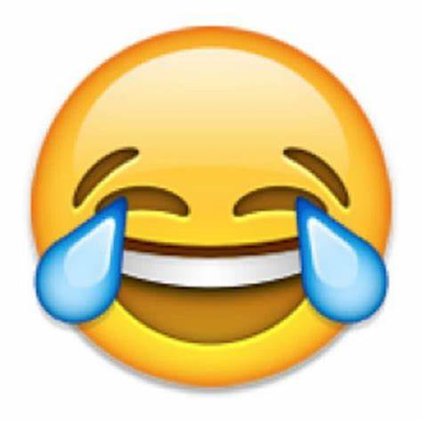

Welcome to a place where you can find some hard to laugh at "dad jokes". There are not meant to have any other meaning then to smile or chuckle, but in the interest of outdated dad jokes, here are a few different pages with some puns.
Joke 1: Joke 1
Joke 2: Joke 2
Joke 3: Joke 3
